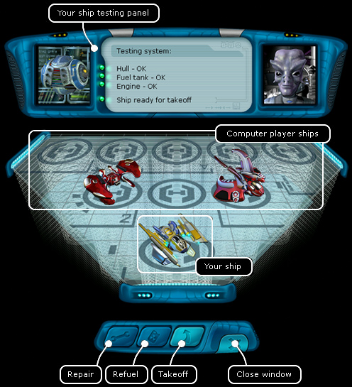

Ranger manual > Planet
screen > Hangar (H)
|
Ranger manual > Planet
screen > Hangar (H)
|
| Hangar (H) This window shows a projected view of a hangar with ships parked therein. Here you can repair the hull of your ship, examine the interior of other ships refuel and take off from the planet. For the pilot's convenience, the robot in the left part of the panel will always inform you on the state of all the most important ship components (hull, engine, fuel tanks). |

| You ship is always located in the first closest parking lot. If you do not have an engine or fuel tanks installed you will not be able to take off. If that is the case you will have to go to the Equipment store, buy all necessary, and install everything into the relevant slots, via the dialogue window 'Ship' (S). To examine the interior of other ships: • Right-click the ship, you will see its interior, even if you have no scanner installed (you can also click your ship). To repair the ship's hull: • Press 'Repair (A) in the bottom part of the window. The option is available, only if the hull is really damaged. To refuel: • Press 'Refuel' (B). The option is available, only if the fuel tanks are half empty. To take off the planet: • Press 'Takeoff' (F). Hint. Always get refuelled before the takeoff! If the fuel tanks are half empty, when you find yourself in the space, you might have not enough fuel for making a flight to another space system, in this case you will have to return to your planet. |